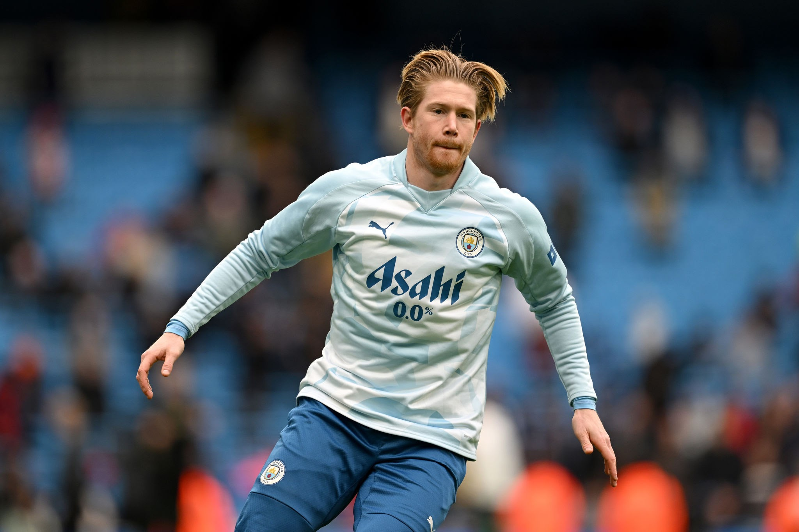

Kevin DeBryune

Summary:
Hey, I am Kevin DeBryune, player for Man City and Belgium National Team. I am 32 years old and I play as a
midfielder for both the teams.
Education:
Bachelors in Sports and Atheletics.
Playing Experience:
- 2012-2013 from Werder Bremen on Loan
- Played as a midfilder
- Played as a winger
- 2014-2015 from VFL Wolfsburg
- Played as a midfilder
- Played as a winger
- 2015 till today from Manchester City
- Played as a midfilder
- Played as a winger
Skills:
- Can pass the ball between the space with ease
- Free Kick Specialist
- Leadership
Achievements and Awards:
- Champions league winner 2023
- Best midfielder of the tournment
- 5 times premier league winner
- FA Cup, Carabao Cup, Community Shield Winner
Others: